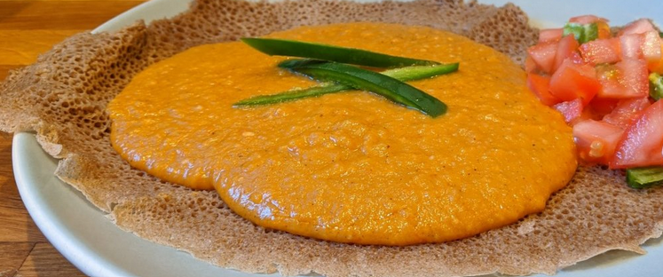

Shiro

Description
Shiro is a staple vegetarian dish in Ethiopian cuisine. It is a stew or curry made from ground dried chickpeas and various spices. Just like any other Ethiopian dish,
it is served with injera.
Ingredients
- Shiro Powder
- Onion
- Garlic(minced)
- berbere spice
- Niter Kibbeh
- water
- Salt
Steps
- Heat the niter qibeh over medium heat
- Add finely chopped onion and saute it until it turns golden brown
- Add the minced garlic and cook for another minute
- Add shiro Powder
- Add the berbere spice to the pot and mix well.
- Add water and simmer
- Season and serve!